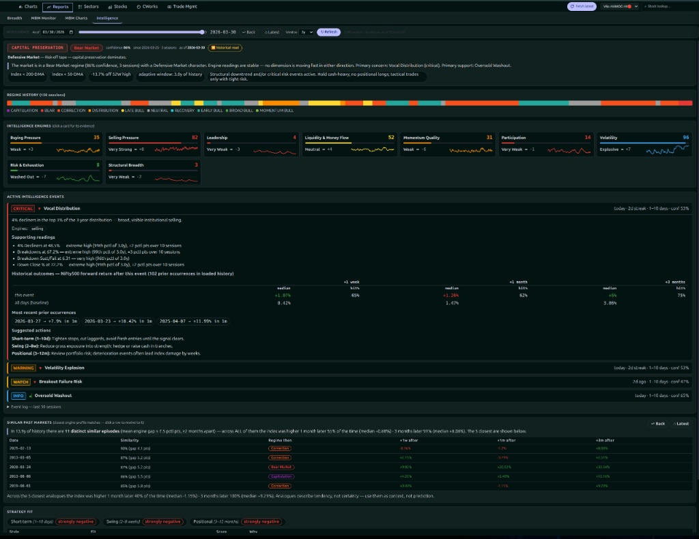
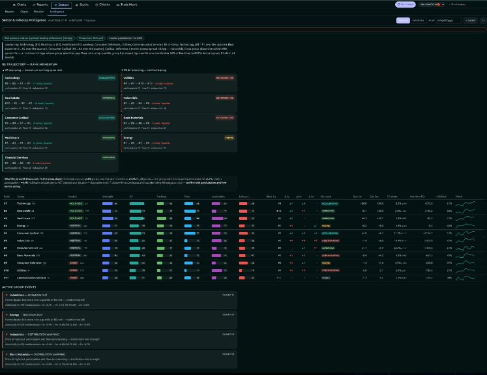
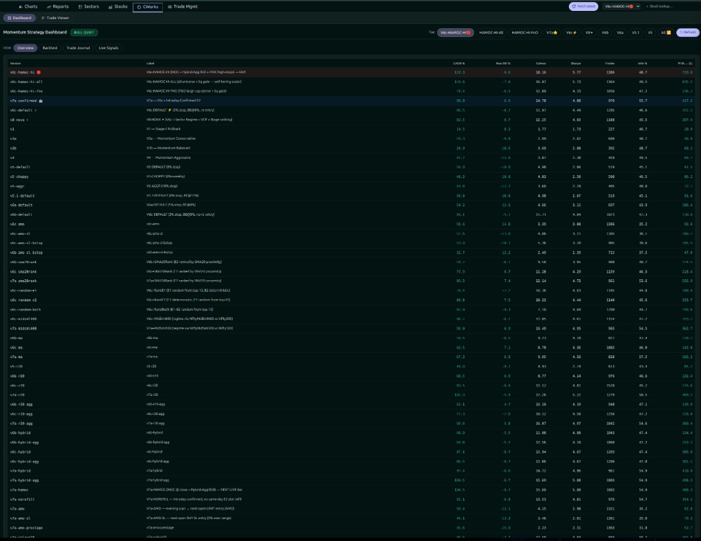
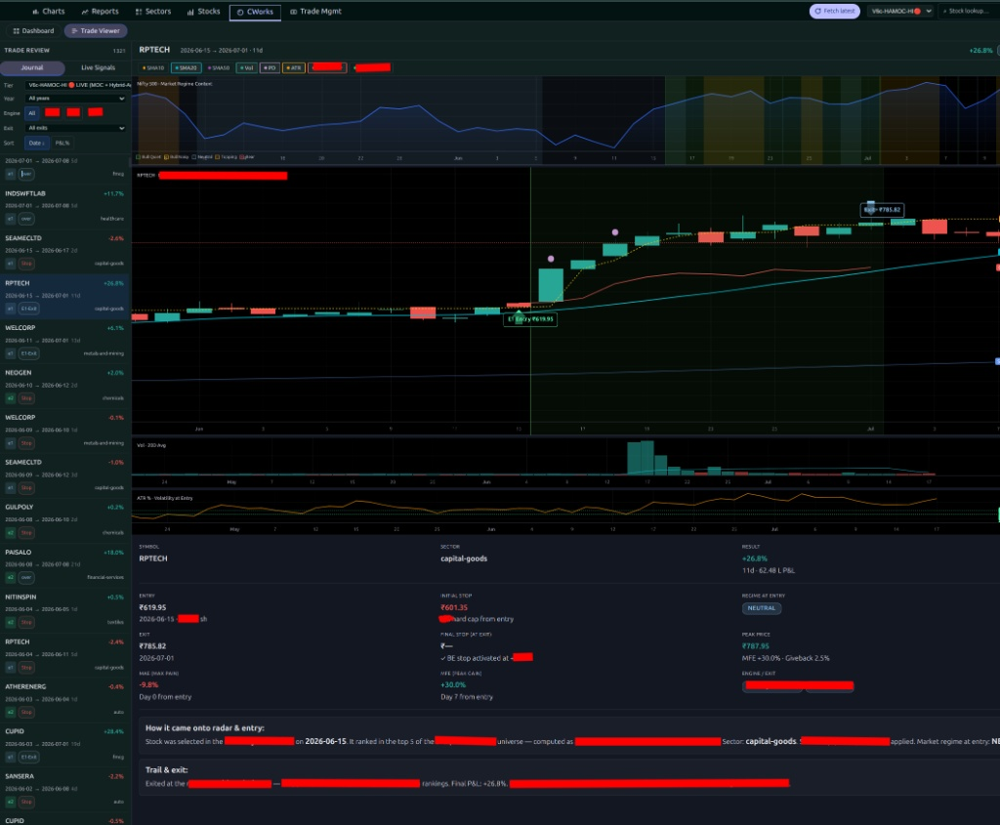
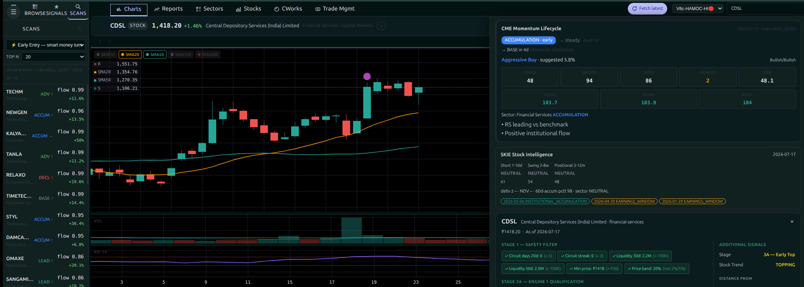

3AK-CWorks is an AI-native decision intelligence platform that continuously researches markets, discovers investment opportunities, constructs portfolios, manages risk, executes trades, and learns from production outcomes.
Years of market data used for research, experimentation and validation.
Research experiments across multiple signals and environments.
Currently executing with real capital in production.
AI-built end-to-end for deep data research and system engineering.
Every investment decision passes through multiple specialised intelligence layers before capital is committed.
Every capability inside 3AK-CWorks originates from first-principles thinking, extensive historical research, statistical validation, robustness testing and real-world production feedback. The platform is intentionally designed to evolve through evidence, not assumptions.
Every model starts from understanding market behaviour instead of fitting indicators.
Ideas are researched, challenged, validated, or rejected using historical evidence.
Tested across different market environments, corrections, momentum phases and volatility regimes.
Robustness is prioritised over optimisation to avoid fragile systems.
Live execution continuously feeds intelligence back into research.
Research never stops. Every market cycle creates new learning opportunities.
The current production intelligence represents the latest generation of the research platform. Rather than exposing proprietary strategy logic, it demonstrates the maturity of the complete autonomous investment workflow.
🟢 Status LIVE
Model HAMOC™ V6C-HI
Execution Autonomous
Risk Management Dynamic
Learning Continuous
Regime recognition, market participation, liquidity, relative strength, breadth and momentum.
Ranks opportunities, allocates capital, measures conviction and controls exposure.
Autonomous order execution, position management, adaptive exits and trailing logic.
Production outcomes continuously improve research and future decision quality.
A selection of recent alpha capture outcomes generated, managed, and closed autonomously by the live production intelligence layer during the current market phase.
| Entry Date | Symbol | Days in Trade | Profit Captured |
|---|---|---|---|
| 2026-07-17 | AURUM | 31 | +19.78% |
| 2026-07-14 | ASTRAMICRO | 27 | +8.60% |
| 2026-07-08 | MSTCLTD | 26 | +16.20% |
| 2026-07-06 | CUPID | 31 | +45.00% |
| 2026-07-02 | AVL | 16 | +8.00% |
| 2026-06-25 | RICOAUTO | 20 | +7.00% |
3AK-CWorks has been designed as a modular intelligence platform. Each capability can evolve independently while continuously contributing to the overall quality of investment decisions.
Idea generation, feature engineering, strategy discovery and validation.
Opportunity scoring, ranking, portfolio construction and capital allocation.
Autonomous execution, risk controls, trade management and monitoring.
Trade analytics, feedback loops, continuous improvement and future evolution.
Today's investment industry largely automates execution while leaving research, reasoning and portfolio decisions dependent on human expertise.
3AK-CWorks takes a fundamentally different approach. It is being built as an AI-native operating system capable of continuously understanding markets, generating research, constructing portfolios, managing risk and improving itself through production feedback.
The long-term vision extends well beyond systematic trading. It is the foundation for a continuously learning autonomous wealth management platform.
Built as a software platform rather than a collection of trading strategies. Each capability evolves independently while contributing to the overall intelligence of the system.
Research decisions are driven by statistical validation, historical evidence, live production observations and continuous refinement.
Artificial Intelligence is integrated throughout the research, decision making and learning workflow rather than added as a separate feature.
From market understanding to execution and learning, the platform is designed to minimize manual intervention while maintaining disciplined risk management.
✓ Years of quantitative research and experimentation
✓ AI-native investment operating system designed and implemented
✓ Multiple generations of investment intelligence developed
✓ Current production intelligence deployed with live capital
✓ Continuous research pipeline operating alongside production
✓ Building toward a fully autonomous wealth management platform
Autonomous regime tracking matrix mapping capital preservation conditions, technical gauges, historical analogues, and strategy fit variations.

Real-time rank momentum and RS trajectory tracking engine breaking down sector allocation strength, institutional participation, and rotation dynamics.

Comprehensive quantitative tracking layer validating historical parameters across diverse model iterations, tracking CAGR, Max Drawdown, Sharpe, and Win Ratios.

Granular trade-by-trade analytics tracking execution entry fidelity, initial stops, Maximum Adverse Excursion (MAE), and trailing-stop performance variables.

Active opportunity discovery matrix calculating momentum lifecycles, institutional accumulation metrics, safety filters, and qualification indicators.

Most investment platforms optimize execution.
3AK-CWorks is being built to optimize investment intelligence itself.
By combining AI reasoning, quantitative research, market intelligence, portfolio construction, execution and continuous learning into a unified operating system, the objective is to fundamentally rethink how investment decisions are made.